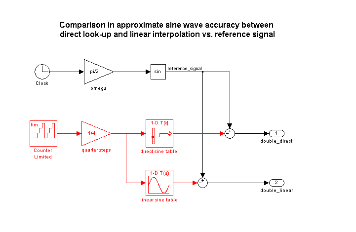
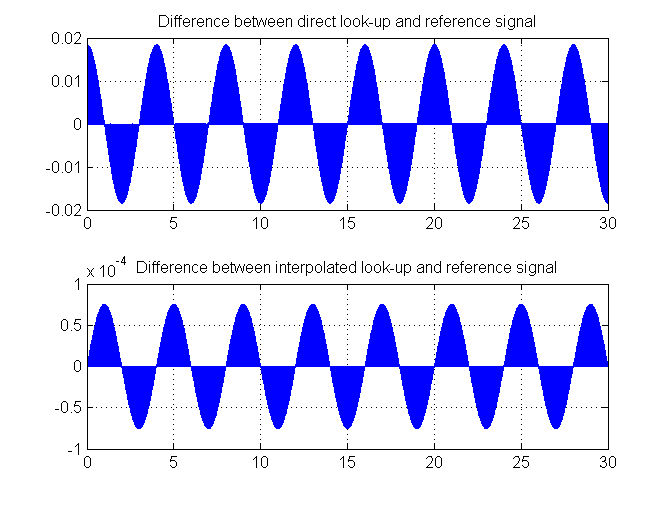
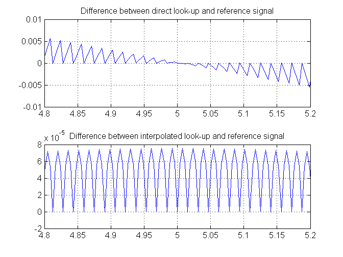
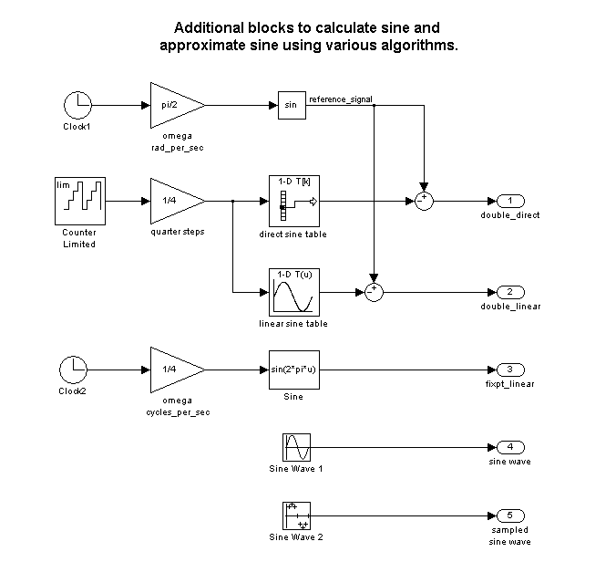
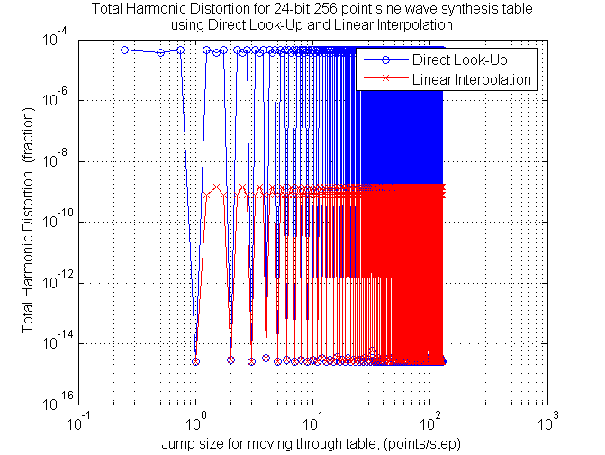

Real-Time direct digital synthesis of analog waveforms using embedded processors and digital signal processors (DSPs) connected to digital-to-analog converters (DACs) is becoming pervasive even in the smallest systems. Developing waveforms for use in embedded systems or laboratory instruments can be streamlined using the tight integration of MATLAB and Simulink. You can develop and analyze the waveform generation algorithm and its associated data at your desktop before implementing it with Real-Time Workshop on target hardware. This demonstration goes through some of the main steps needed to design and evaluate a sine wave data table for use in digital waveform synthesis applications in embedded systems and arbitrary waveform generation instruments. (Open the model: matlab:sldemo_tonegen)
When feasible, the most accurate way to digitally synthesize a sine wave is to compute the full precision sin() function directly for each time step, folding omega*t into the interval 0 to 2*pi. In real-time systems, the computational burden is typically too large to permit this approach. One popular way around this obstacle is to use a table of values to approximate the behavior of the sin() function, either from 0 to 2*pi, or even half wave or quarter wave data to leverage symmetry.
Tradeoffs to consider include algorithm efficiency, data ROM size required, and accuracy/spectral purity of the implementation. Similar analysis is needed when performing your own waveform designs. The table data and look-up algorithm alone do not determine performance in the field. Additional considerations such as the accuracy and stability of the real-time clock, and digital to analog converter are also needed in order to assess overall performance. The Signal Processing Toolbox and the Signal Processing Blockset complement the capabilities of MATLAB and Simulink for work in this area.
The distortion analysis in this demo is based on principles presented in "Digital Sine-Wave Synthesis Using the DSP56001/DSP56002", by Andreas Chrysafis, Motorola Inc. 1988
The following commands make a 256 point sine wave and measure its total harmonic distortion when sampled first on the points and then by jumping with a delta of 2.5 points per step using linear interpolation. For frequency-based applications, spectral purity can be more important than absolute error in the table.
This M-file matlab:edit('ssinthd.m') is the core function in this demo. It is used for calculating total harmonic distortion (THD) for digital sine wave generation with or without interpolation. This THD algorithm proceeds over an integral number of waves to achieve accurate results. The number of wave cycles used is A. Since the step size 'delta' is A/B and traversing A waves will hit all points in the table at least one time, which is needed to accurately find the average THD across a full cycle.
The relationship used to calculate THD is:
THD = (ET - EF) / ET
where ET = total energy, and EF = fundamental energy
The energy difference between ET and EF is spurious energy.
N = 256; s = sin( 2*pi * (0:(N-1))/N)'; thd_ref_1 = ssinthd( s, 1, N, 1, 'direct' ) thd_ref_2p5 = ssinthd( s, 5/2, 2*N, 5, 'linear' )
thd_ref_1 = 4.6471e-032 thd_ref_2p5 = 1.4176e-009
You can put the sine wave designed above into a Simulink model and see how it works as a direct lookup and with linear interpolation. This model compares the output of the floating point tables to the sin() function. As expected from the THD calculations, the linear interpolation has a lower error than the direct table lookup in comparison to the sin() function.
open_system('sldemo_tonegen'); sim('sldemo_tonegen'); subplot(2,1,1), plot(tonegenOut.time, tonegenOut.signals(1).values); grid title('Difference between direct look-up and reference signal'); subplot(2,1,2), plot(tonegenOut.time, tonegenOut.signals(2).values); grid title('Difference between interpolated look-up and reference signal'); 
Zooming in on the signals between 4.8 and 5.2 seconds of simulation time (for example), you can see a different characteristic due to the different algorithms used:
close_system('sldemo_tonegen'); ax = get(gcf,'Children'); set(ax(2),'xlim',[4.8, 5.2]) set(ax(1),'xlim',[4.8, 5.2])
Now convert the floating point table into a 24 bit fractional number using 'nearest' rounding. The new table is tested for total harmonic distortion in direct lookup mode at 1, 2, and 3 points per step, then with fixed point linear interpolation.
bits = 24; is = num2fixpt( s, sfrac(bits), [], 'Nearest', 'on'); thd_direct1 = ssinthd(is, 1, N, 1, 'direct') thd_direct2 = ssinthd(is, 2, N, 2, 'direct') thd_direct3 = ssinthd(is, 3, N, 3, 'direct') thd_linterp_2p5 = ssinthd(is, 5/2, 2*N, 5, 'fixptlinear')
thd_direct1 = 2.6423e-015 thd_direct2 = 2.8660e-015 thd_direct3 = 2.6423e-015 thd_linterp_2p5 = 1.4175e-009
Choosing a table step rate of 8.25 points per step (33/4), jump through the double precision and fixed point tables in both direct and linear modes and compare distortion results:
thd_double_direct = ssinthd( s, 33/4, 4*N, 33, 'direct') thd_sfrac24_direct = ssinthd(is, 33/4, 4*N, 33, 'direct') thd_double_linear = ssinthd( s, 33/4, 4*N, 33, 'linear') thd_sfrac24_linear = ssinthd(is, 33/4, 4*N, 33, 'fixptlinear')
thd_double_direct = 4.7061e-005 thd_sfrac24_direct = 4.7061e-005 thd_double_linear = 7.9741e-010 thd_sfrac24_linear = 8.1751e-010
Simulink also includes a sine wave source block with continuous and discrete modes, plus fixed point sin and cosine function blocks that implement the function approximation with a linearly interpolated lookup table that exploits the quarter wave symmetry of sine and cosine. (Open the model: matlab:sldemo_tonegen_fixpt)
open_system('sldemo_tonegen_fixpt');
 The M-file matlab:edit('sldemo_sweeptable_thd.m') performs a full frequency sweep of the fixed point tables will let us more thoroughly understand the behavior of this design. Total harmonic distortion of the 24-bit fractional fixed point table is measured at each step size, moving through it D points at a time, where D is a number from 1 to N/2, incrementing by 0.25 points. N is 256 points in this example, the 1, 2, 2.5, and 3 cases were done above. Frequency is discrete and therefore a function of the sample rate.
Notice the modes of the distortion behavior in the plot, they match with common sense: when retrieving from the table precisely at a point, the error is smallest; linear interpolation has a smaller error than direct lookup in between points. What wasn't apparent from using common sense was that the error is relatively constant for each of the modes up to the Nyquist frequency.
figure('color',[1,1,1])
tic, sldemo_sweeptable_thd(24, 256), toc
Elapsed time is 10.606000 seconds.
To take this demonstration further, try different table precision and element counts to see the effect of each. You can investigate different implementation options for waveform synthesis algorithms using automatic code generation available from the Real-Time Workshop and production code generation using Real-Time Workshop Embedded Coder. Embedded Target products offer direct connections to a variety of real-time processors and DSPs, including connection back to the Simulink diagram while the target is running in real-time. The Signal Processing Toolbox and Signal Processing Blockset offer prepackaged capabilities for designing and implementing a wide variety of sample-based and frame-based signal processing systems with MATLAB and Simulink.
close_system('sldemo_tonegen_fixpt')